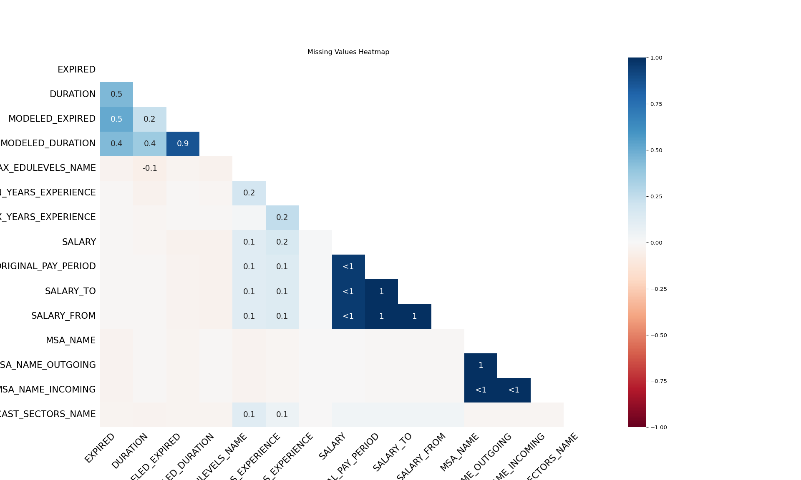
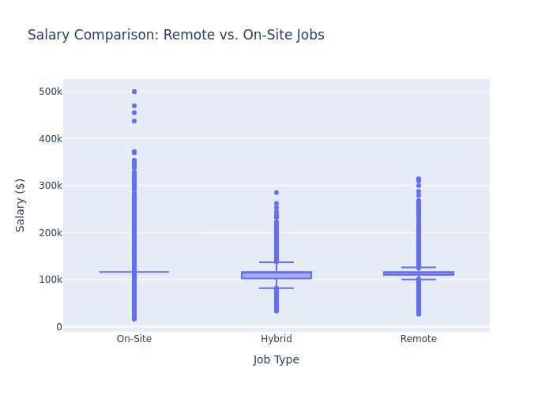
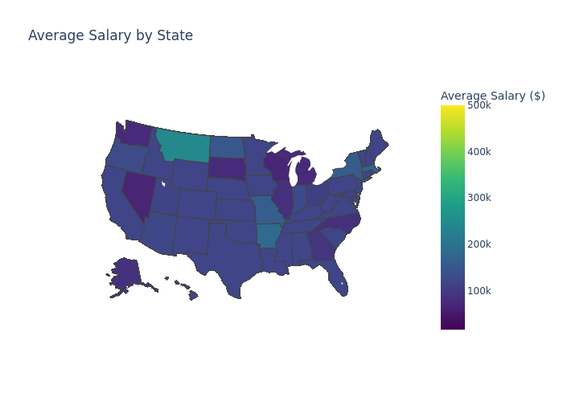
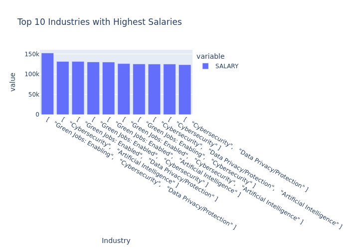
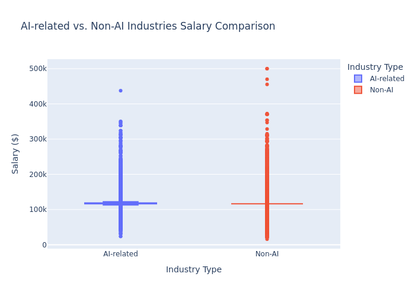

Code
import pandas as pd
import matplotlib.pyplot as plt
import missingno as msno
import plotly.express as px
# Load dataset
df = pd.read_csv("data/lightcast_job_postings.csv")Comprehensive Data Cleaning & Exploratory Analysis of Job Market Trends
March 6, 2025
Many variables in the dataset has two columns, one is code name of the variable, and the other is the real name of the variable. We will delete all the columns with code name of the variables, since they are meaningless. For example, we have a job “Data analysts”, we do not need to know whether its code name is “10001”, or “A-001”, or something like this, because it’s useless and there’s no real significance to it, we can change these code names at will.
Also, columns like “LAST_UPDATED_TIMESTAMP”, duplicates the meaning of the other variable “LAST_UPDATED_DATE”. Since we basically only need to know the last update date, and don’t have to be specific to a moment in that day, we’ll remove such columns as well.
We remove redundant ONET/NAICS/SOC/LOR codes and tracking data to simplify our dataset. Keeping only the latest ONET_2019, NAICS_2022_6, SOC_2021_5, and LOT_V6 ensures that our analysis reflects current industry and occupational classifications.
columns_to_drop = ["ID", "URL", "ACTIVE_URLS", "DUPLICATES", "LAST_UPDATED_TIMESTAMP", "ACTIVE_SOURCES_INFO",
"TITLE_RAW", "COMPANY", "COMPANY_RAW", "EDUCATION_LEVELS", "MIN_EDULEVELS", "MAX_EDULEVELS",
"EMPLOYMENT_TYPE", "REMOTE_TYPE", "CITY", "COUNTY", "MSA", "STATE", "COUNTY_OUTGOING",
"COUNTY_INCOMING", "MSA_OUTGOING", "MSA_INCOMING", "NAICS2", "NAICS2_NAME", "NAICS3", "NAICS3_NAME",
"NAICS4", "NAICS4_NAME", "NAICS5", "NAICS5_NAME", "NAICS6", "NAICS6_NAME", "TITLE", "TITLE_CLEAN",
"SKILLS", "SPECIALIZED_SKILLS", "CERTIFICATIONS", "COMMON_SKILLS", "SOFTWARE_SKILLS", "ONET", "ONET_NAME",
"ONET_2019", "CIP6", "CIP4", "CIP2", "SOC_2021_2", "SOC_2021_2_NAME", "SOC_2021_3", "SOC_2021_3_NAME",
"SOC_2021_4", "SOC_2021_4_NAME", "SOC_2021_5", "LOT_CAREER_AREA", "LOT_CAREER_AREA_NAME", "LOT_OCCUPATION",
"LOT_OCCUPATION_NAME", "LOT_SPECIALIZED_OCCUPATION", "LOT_SPECIALIZED_OCCUPATION_NAME", "LOT_OCCUPATION_GROUP",
"LOT_OCCUPATION_GROUP_NAME", "LOT_V6_SPECIALIZED_OCCUPATION", "LOT_V6_OCCUPATION", "LOT_V6_OCCUPATION_GROUP",
"LOT_V6_CAREER_AREA", "SOC_2", "SOC_2_NAME", "SOC_3", "SOC_3_NAME", "SOC_4", "SOC_4_NAME", "SOC_5",
"SOC_5_NAME", "LIGHTCAST_SECTORS", "NAICS_2022_2", "NAICS_2022_2_NAME", "NAICS_2022_3", "NAICS_2022_3_NAME",
"NAICS_2022_4", "NAICS_2022_4_NAME", "NAICS_2022_5", "NAICS_2022_5_NAME", "NAICS_2022_6"]
df.drop(columns=columns_to_drop, inplace=True)We use different strategies for missing values:

# Drop columns with >50% missing values
df.dropna(thresh=len(df) * 0.5, axis=1, inplace=True)
# Fill missing values
def fill_missing_values(df):
for col in df.select_dtypes(include=['number']).columns:
df[col] = df[col].fillna(df[col].median())
for col in df.select_dtypes(exclude=['number']).columns:
df[col] = df[col].fillna("Unknown")
return df
fill_missing_values(df)To ensure each job is counted only once, we remove duplicates based on job title, company, location, and posting date.
First clean up REMOTE_TYPE_NAME, split all data into field, remote, and hybrid, and then plot.
Convert values to string and clean unnecessary characters
Remove invalid values (numbers and locations)

Originally, the state names in “STATE_NAME” were all full names, so abbreviate them before drawing them
Convert full state names to abbreviations
Verify conversion
print(df["STATE_NAME"].unique()) # Should now contain abbreviations like 'CA', 'TX', 'ME'
fig = px.choropleth(df,
locations="STATE_NAME",
locationmode="USA-states",
color="SALARY",
hover_name="STATE_NAME",
scope="usa",
title="Average Salary by State",
color_continuous_scale="Viridis",
labels={"SALARY": "Average Salary ($)"})
fig.show()

First define in LIGHTCAST_SECTORS_NAME what is an AI job and what is not an AI job.
Define AI-related keywords based on LIGHTCAST_SECTORS_NAME
Classify AI-related vs. Non-AI industries
